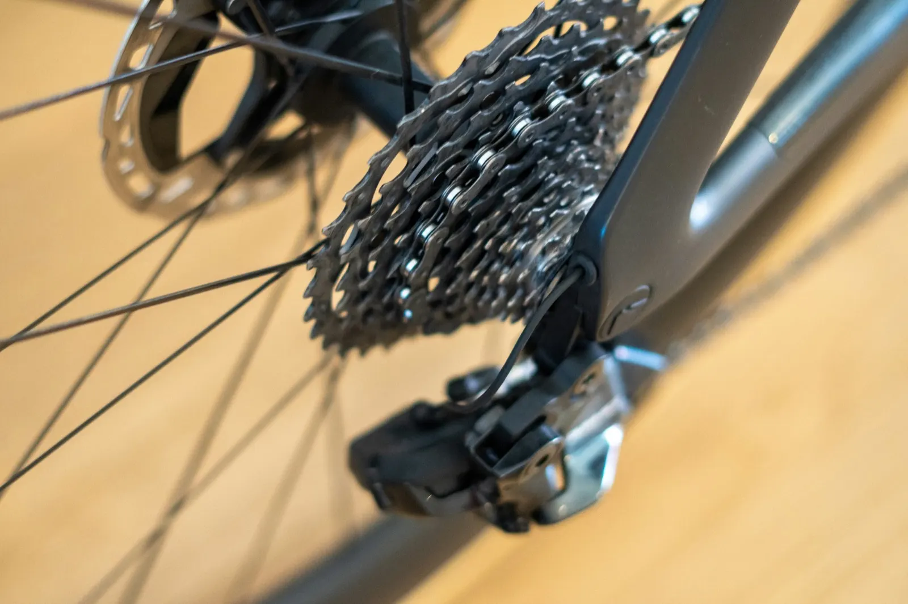
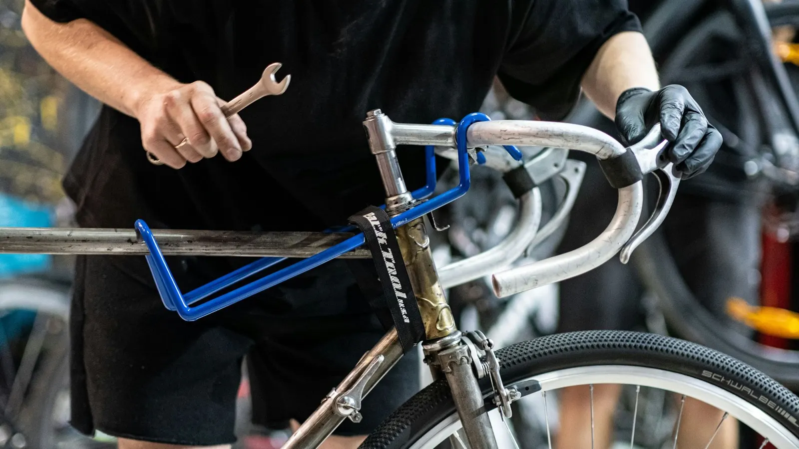
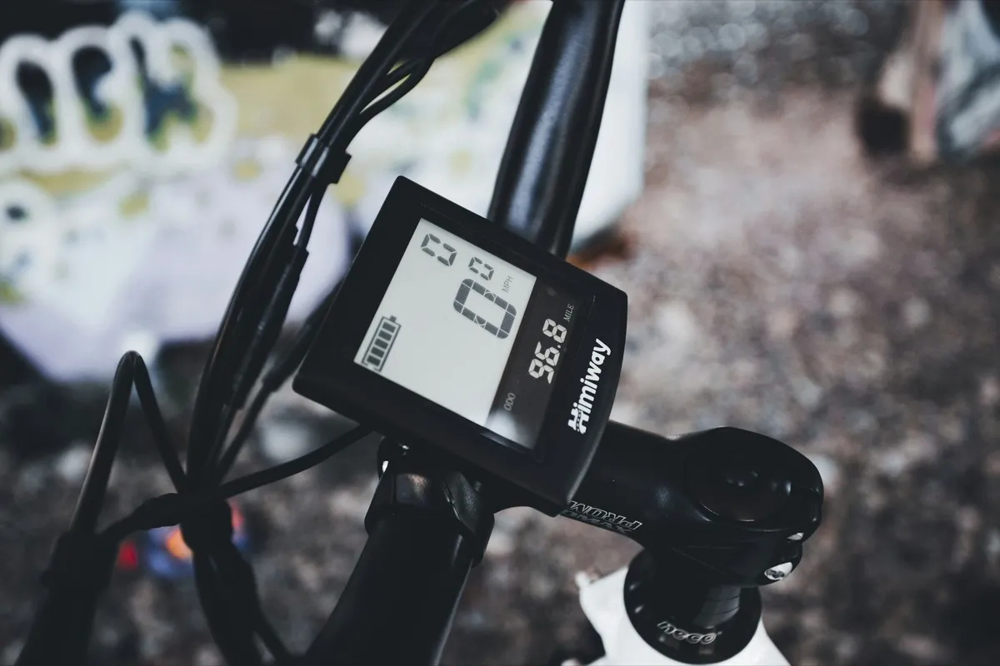

Remmen en schakelen
Ontluchten, remblokken, kabels en derailleurpad richten. Vaak klaar terwijl je een koffie drinkt.
Elke beurt heeft een vaste prijs en een vaste duur. Hieronder staat precies wat Jay doet, wat erbij kan, en waar je op kunt rekenen.
€ 6975 minuten · exclusief materiaal
Bedoeld om grotere, dure reparaties te voorkomen. Jay loopt de belangrijke onderdelen na, stelt af wat afgesteld moet worden en zegt eerlijk wat er nog goed is.

€ 159180 minuten · exclusief materiaal
De grote beurt: de hele fiets van voor naar achter, volledig gedemonteerd, elk lager schoon en met nieuw vet, en versleten delen in overleg vervangen. Daarna een jaar garantie op perfect rollen, remmen en schakelen.

Omdat de fiets toch uit elkaar ligt, doet Jay dit werk dan voordeliger dan los. Kies het in de planner of overleg bij het brengen.
Alle beurten zijn exclusief materiaal: zo kiest Jay altijd de onderdelen die passen bij de staat en het gebruik van je fiets.
€ 8590 minuten · exclusief materiaal
De hele fiets nagelopen en deels gedemonteerd, plus de software van het systeem bijgewerkt. Neem de accu en de sleutel mee.

Een derailleurpad die gericht moet worden, een piepende rem, een lekke tubeless band: loop binnen tijdens openingstijden of app een foto, dan zegt Jay wat het kost.
Ontluchten, remblokken, kabels en derailleurpad richten. Vaak klaar terwijl je een koffie drinkt.
Ketting, cassette, kettingbladen en lagers. Jay meet de slijtage en vervangt alleen wat echt op is.
Foutmeldingen, accu-check en software. Neem de sleutel en de accu mee.
Plan je beurt in de online reparatieplanner. Brengen kan dinsdag tot en met vrijdag vanaf 7.30 uur.